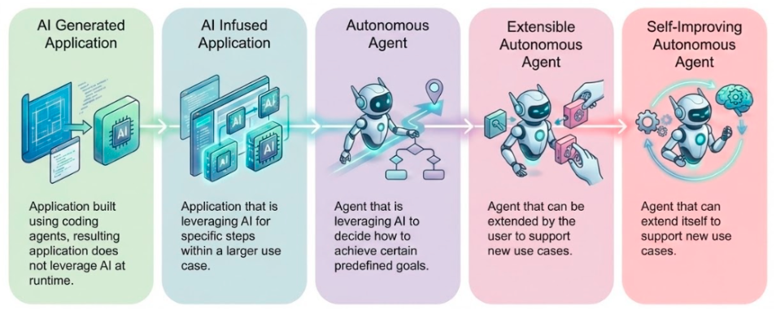

The Agentic Workforce: Why Every Enterprise Needs to Start Planning Now
Something fundamental is shifting in enterprise AI. We're moving beyond chatbots, beyond copilots, beyond tools that assist humans. 2025 might not have been the year of agents yet, but in software engineering the shift is already happening! We're entering the era of the agentic workforce: autonomous AI agents doing everyday work: they don't just suggest actions, they take them. Yes, we're not there yet exactly, but we're quickly moving forward towards it!
If your organization hasn't started thinking about how to manage an agentic workforce, you're might be falling behind.
What is an Agentic Workforce?
An agentic workforce is a distributed system of autonomous AI agents that help you and anyone in your company in their day-to-day tasks: make decisions, take actions, and collaborate to accomplish business objectives.
These aren't the chatbots you're familiar with. Agentic systems feature:
- Autonomy: Agents make decisions based on goals, not just respond to prompts
- Tool Use: Agents interact with enterprise APIs, databases, and business systems
- Continuous Operation: Agents monitor, respond, and adapt 24/7
- Human Oversight: Critical decisions route through approval workflows
- Collaboration: Multiple specialized agents work together on complex tasks
- Continuous Learning: Agents observe outcomes and identify opportunities for optimization
Think of it as the evolution towards truly intelligent automation that handles exceptions, learns from outcomes, and coordinates across organizational boundaries. Make your employees more productive by giving each of them agentic assistants that help them with every part of their work. These agentic workers do not work on their own in isolation, they augment and scale your existing employees.
Why the Urgency? Why Now?
1. The Technology Has Matured
Agents have crossed the threshold from research to production:
- Claude Code, LangChain, Google ADK, CrewAI, and others are production-ready
- Foundation models are reliable enough for handling more complex use cases that require longer multi-step execution
- Agents interact with enterprise systems and can respond to events autonomously
- Skills allow generalist agents to be extended with custom knowledge
- The most advanced agents learn from experience and can improve themselves
This isn't coming—it's here.

2. Economic Pressure is Mounting
Enterprises face twin pressures:
- Cost reduction: Automate expensive manual processes
- Competitive dynamics: Rivals deploying agents gain efficiency advantages
Organizations that wait will find themselves at a competitive disadvantage as early adopters scale their agentic workforces.
3. The Talent Gap is Widening
There aren't enough skilled workers for every task. Agents multiply human capability:
- One analyst supervising 10 fraud detection agents
- One operator managing 20 incident response agents
- One attorney reviewing contracts flagged by 5 review agents
Agents enable people to do more, amplifying their expertise rather than replacing them.
4. Complexity is Increasing
Business operations are too complex for manual management:
- Global supply chains with thousands of variables
- IT infrastructures spanning hybrid cloud and edge
- Customer interactions across dozens of channels
Agents can monitor, optimize, and respond at a scale and speed humans cannot.
The Inflection Point
Agentic AI is at a critical juncture. The next 2-3 years will determine which organizations successfully scale their agentic workforces and which struggle with fragmentation and risk.
What Happens if You Wait?
Organizations that delay face compounding problems:
Agent Sprawl: Every team deploys agents differently, creating incompatible systems
Security Gaps: Ungoverned agents create catastrophic risk
Wasted Investment: Teams reinvent common capabilities instead of sharing
Competitive Disadvantage: Early adopters operate more efficiently
Compliance Failures: Regulators demand audit trails that don't exist
The cost of waiting isn't just opportunity—it's technical debt that becomes harder to unwind.
What Success Looks Like
Organizations building agentic workforces effectively will:
- Deploy faster: Teams can start using agents immediately, build trust and start improving them over time
- Operate more safely: Security and governance built in from the start
- Capture your knowledge: Encode what makes you unique and have your agent use that knowledge
- Scale efficiently: Shared infrastructure supports hundreds of agents
- Adapt quickly: New capabilities added without rebuilding
- Demonstrate ROI: Clear metrics on agent performance and cost
This requires platform thinking from the beginning.
The Time to Start is Now
The agentic workforce isn't a future possibility—it's a present reality. Many organizations are already deploying autonomous coding agents today, and the gap between leaders and laggards is widening.
The question isn't whether to build an agentic workforce. It's how to do it in a way that's secure, governed, and scalable.